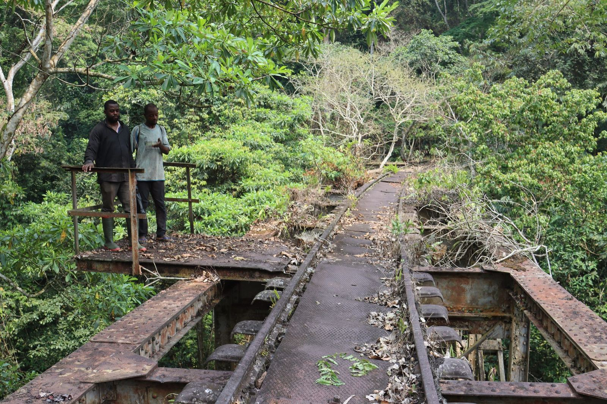
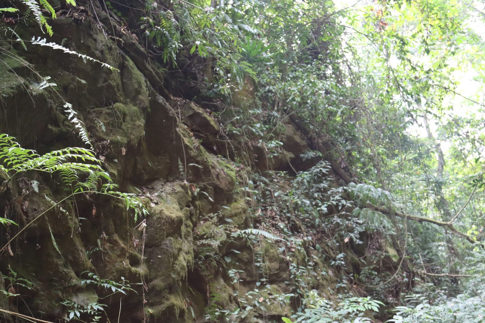
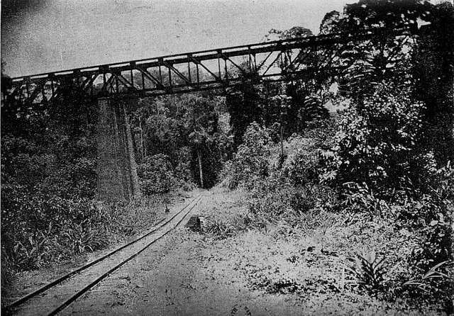
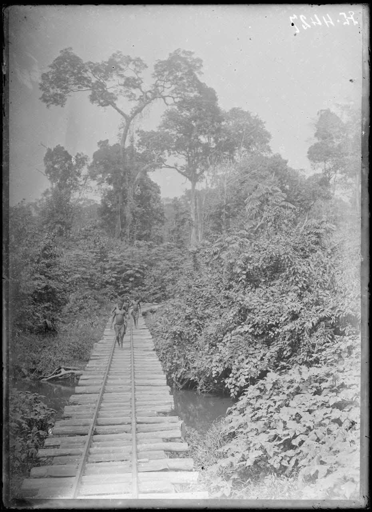
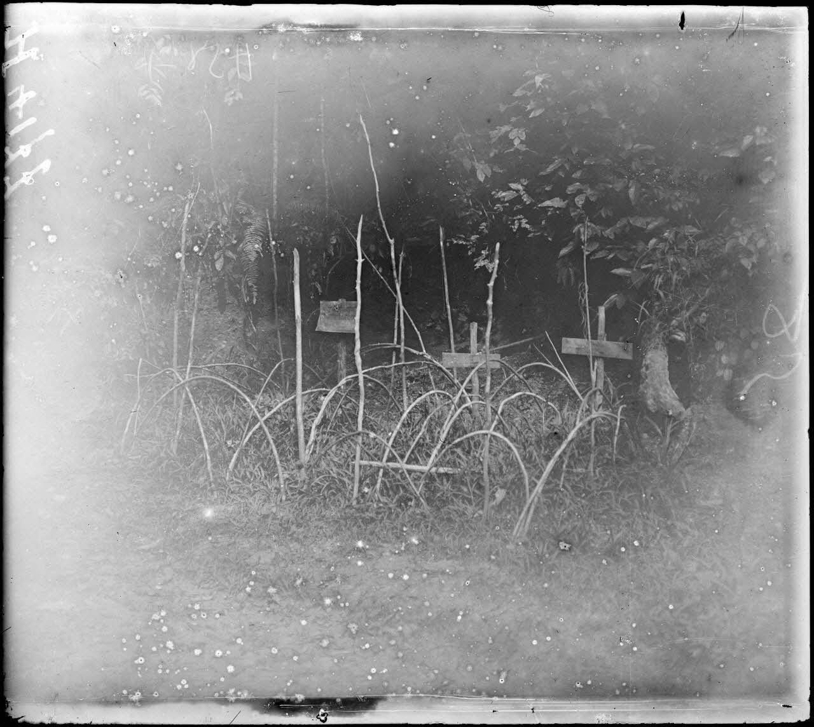
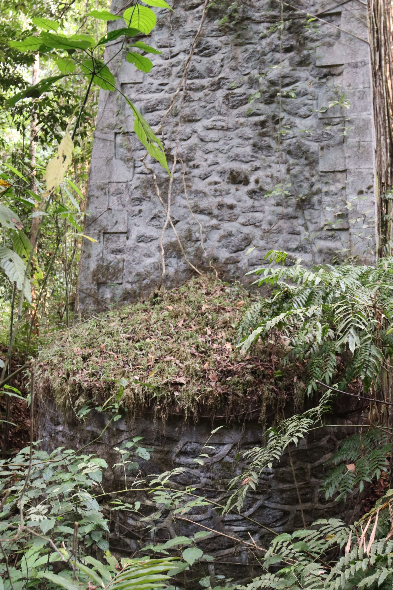
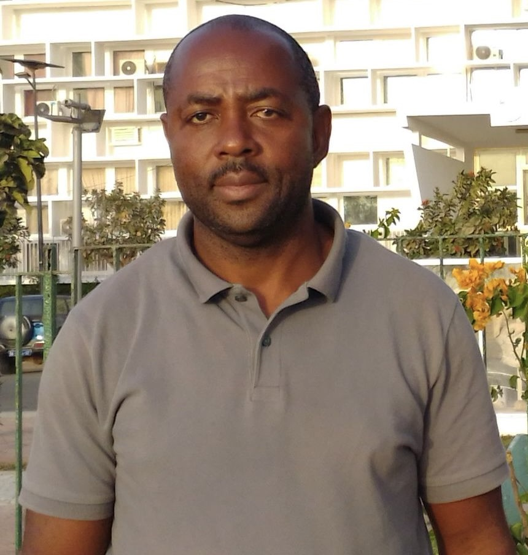

The Écomusée de Malumé is a community initiative dedicated to preserving the oral histories, intangible heritage, and engineering legacy of colonial railway construction in central Cameroon — before these memories disappear forever.
The Project
The Écomusée de Malumé is a community-led heritage project centred on the Malumé region of the Eséka district, in the Centre Region of Cameroon. It focuses on a stretch of the colonial railway — the Mittelbahn — built in the early twentieth century through one of the most demanding terrains in equatorial Africa.
Beneath the tropical canopy that has gradually reclaimed the embankments, cuttings, and metallic bridges, lie stories rarely told: of forced labour and deportation, of families torn apart, of communities reshaped by colonial domination — and of the quiet resilience of those who lived through it all.
Our mission is to document and safeguard this heritage — through oral history recording, linguistic documentation, photographic archives, and community engagement — before the last witnesses are gone. As a legally registered association, we work with the authorisation of Cameroonian cultural authorities and in close partnership with local communities and academic institutions.


Sites reconfigured by history — landscapes that conceal a painful past. © Emmanuel Ngue Um
What We Do
Our work spans memory preservation, natural heritage, community engagement, and academic research.
Recording testimonies from elders across communities linked to the colonial railway — in Bulu, Fang, Ewondo, Sawa, and other indigenous languages.
Documenting the surviving civil engineering works — bridges, cuttings, embankments — as places of memory and as remarkable architectural achievements.
Integrating the ecological richness of the Malumé landscape — waterfalls, caves, dense rainforest — as an inseparable dimension of the heritage experience.
Building a scholarly archive — transcriptions, linguistic data, translations — to support intergenerational transmission and future academic inquiry.
The Heritage Story
How a village near Eséka entered the collective consciousness of an entire people — as a lasting symbol of coercion, loss, and survival.
German colonial engineers begin driving the central railway line through the dense equatorial forest of central Cameroon. The Malumé section, with its steep terrain, river crossings, and rocky outcrops, becomes one of the most labour-intensive stretches of the entire project.
At Njock, a village near Eséka, men are deported from communities across Cameroon and beyond — from Liberia, Togo, Nigeria. Prolonged confinement, high mortality, and family separation leave deep scars. Women travel long distances to bring food and care to those held there.
'Njock' transcends its geographic meaning. In Fang communities, the expression O ta' ke ma Njock — 'do not coerce me' — enters everyday speech as a metaphor for extreme constraint. Comparable expressions spread across Sawa, Eton, Ewondo, Bafia, and Yambasa communities — a shared linguistic scar of colonial violence.
As the last eyewitnesses and their descendants age, as the forest steadily reclaims the railway infrastructure, the window for preservation is closing. The Écomusée de Malumé was created precisely to act before it is too late.



Archive photographs of the Mittelbahn construction, c. 1916–1918.

Beyond forced labour — remarkable engineering works that still stand today. © Emmanuel Ngue Um
“Njock truly represents, in the collective memory, this space of violence and tragedy — one might say it is the equivalent of Auschwitz. Not in that exact context. But it is truly a space of deportation where people were forced to work in order to free themselves and regain their liberty.”— Prof. René Aristide Rodrigue Nzameyo, Head of Philosophy, École Normale Supérieure, Yaoundé. Testimony recorded 2026.
Oral Archive
Each recording in our archive captures a living chain of memory — stories transmitted from those who experienced the railway to those who carry their names today.
Interviewer: “What does the name 'Njock' evoke for you?”
Prof. Nzameyo: “Among us the Fang, Njock is a place of forced labour — linked to the construction of the railway, particularly to stonework. In my own family it carries a painful memory. My uncle spent four years there. He volunteered to go back a second time so that my father, who was physically frail, would be spared. Everything we are, my father used to say, we owe to his elder brother — because had my father perished at Njock, none of us would ever have been born.”
Languages documented include Fang, Bulu, Ewondo, and French. Full transcripts available in the project archive.
Photo Archive
Field photography from the Malumé region — infrastructure, landscapes, and communities along the colonial railway corridor. Click any image to enlarge.
© Emmanuel Ngue Um · Curated archive: 100+ photographs
The Team
The Écomusée de Malumé is governed by a community-elected board, as registered with the Divisional Office of Eséka under Association Declaration Receipt No. 004/RDA/J08/A2.

Official Recognition
Association Declaration
Receipt No. 004/RDA/J08/A2
Divisional Office of Nyong-and-Kellé, Eséka
Issued under Law No. 90/053 of 19 December 1990 on freedom of association in Cameroon.
Ministerial Authorization — MINAC
Decision No. 00036/MINAC/SG/DPC of 8 April 2026
Ministry of Arts and Culture, Cameroon
Authorizing the opening of the Écomusée de Malumé under Law No. 2013/003 of 18 April 2013 on cultural heritage.
Collaborate
We are actively seeking academic partners, researchers, students, and institutions who share our commitment to memory, heritage, and community history. Here is how you can get involved.
We welcome historians, linguists, anthropologists, heritage specialists, and digital humanists. Joint fieldwork, co-authored publications, and thesis supervision are all possibilities.
Propose a PartnershipJoin missions to the Malumé region. We are looking for photographers, video producers, language documenters, and transcribers — especially those with skills in Cameroonian languages.
Express InterestOral testimonies will be triangulated with documentary sources at the Bundesarchiv-Lichterfelde (Berlin) for German colonial records on the Mittelbahn, and the Archives Nationales d'Outre-Mer / ANOM (Aix-en-Provence) for French mandate-era administrative files. Collaboration with archivists and historians working on these collections is especially welcome.
Contact the TeamUniversities, foundations, and cultural institutions can contribute through funding, equipment, event hosting, or facilitating archive access. We are open to all forms of partnership.
Get in TouchContact
Whether you are a researcher, student, cultural institution, or someone who simply cares about this history — we want to hear from you. The right partnerships now will shape what we are able to accomplish.
For academic enquiries
Please mention your institutional affiliation and research area in your message so we can respond appropriately.